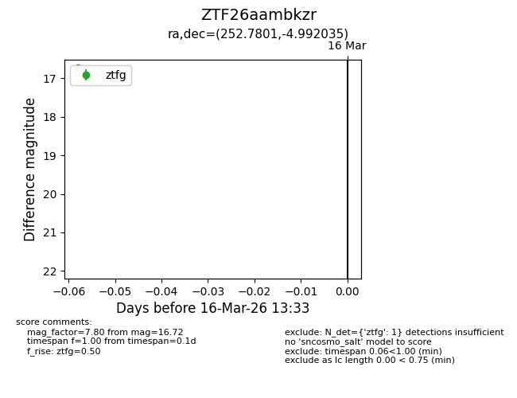
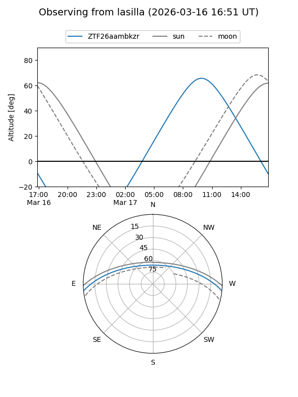
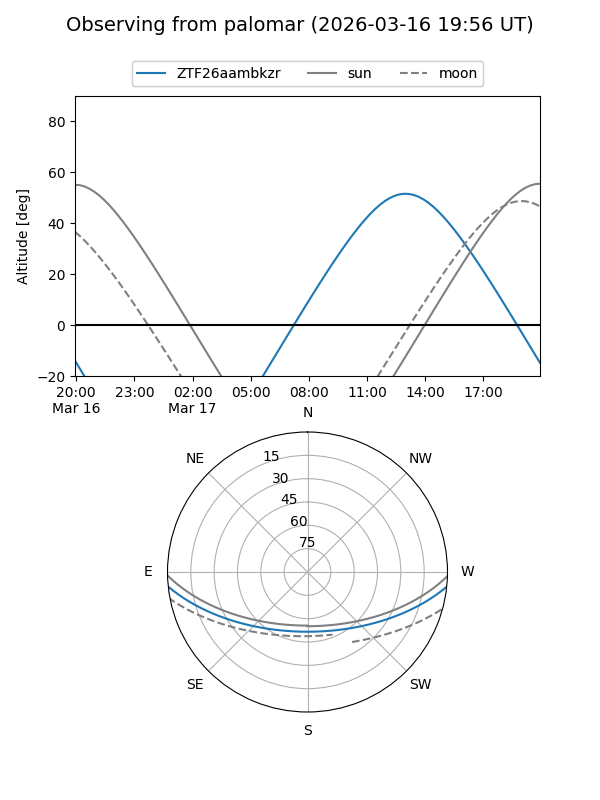
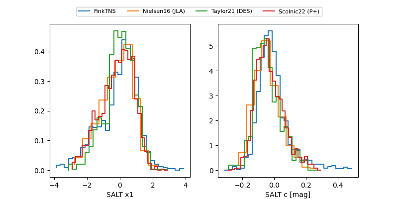

ZTF26aambkzr
Target ZTF26aambkzr at 2026-03-16 13:35
Aliases and brokers:
FINK: link
Lasair: link
ALeRCE: link
alt names
ZTF26aambkzr (ztf,fink_ztf)
Coordinates:
equatorial (ra, dec) = 252.7801,-4.99203
equatorial (HMS+DMS) = 16:51:07.23,-04:59:31.32
galactic (l, b) = (13.4409,+23.87175)
Flags:
Photometry:
last ztfg=16.72
1 ztfg detections
Lightcurve

Visibility


Additional plots
